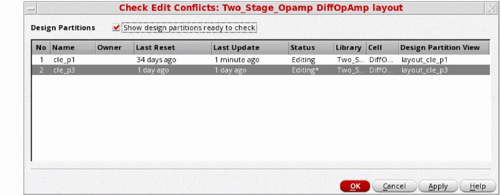

Checking and Resolving Edit Conflicts after Concurrent Layout Editing
To check the log of all conflicts:
-
Right-click on the design partition and then click Check Edit Conflicts.
The Check Edit Conflicts form is displayed.
Use this form to identify even those edit conflicts that were undetected by the assistant alert system including hierarchical edits. You can use this form to thoroughly check for conflicts between the selected design partitions and the top design. -
Click OK.
The design is checked for edit conflicts, the Edit Conflicts Summary report is displayed, and the form is closed.
You should either resolve or sign off edit conflicts before submitting your design for merge. You can view alerts and warnings and then either resolve or sign-off these conflicts from the Summary Pane and Details Pane of the Concurrent Layout assistant.
There are certain measures you can take to avoid edit conflicts. For example:
- Avoid running block-level commands, such as automatic placement and routing, floor planning, pin optimization and, recolor all because this may generate several edit conflicts if they run in two design partitions.
- Ensure that Generate Selected From Source does not pick the same objects for two different design partitions.
Related Topics
Return to top